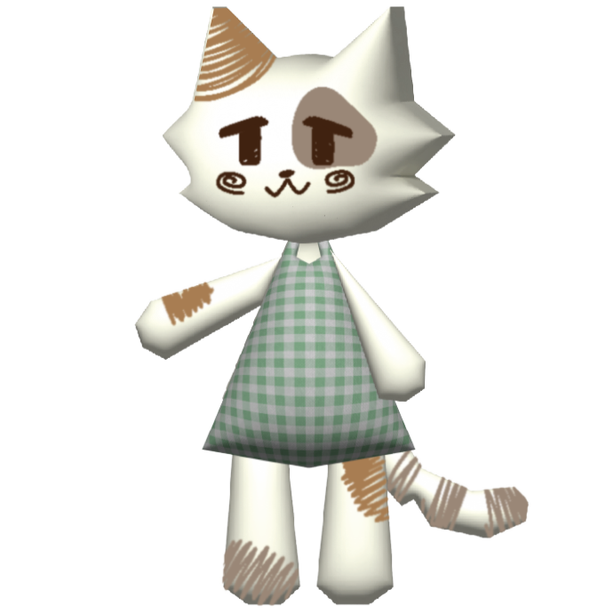

Summary
This tutorial will allow anyone to replicate N64 style models! Although possible to create in other art programs, Adobe Illustrator will be the sole program we'll use. This tutorial will follow a basic template so that most characters can be created. Our little friend Mocha will help us through this process! 